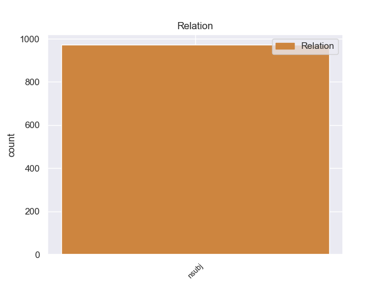
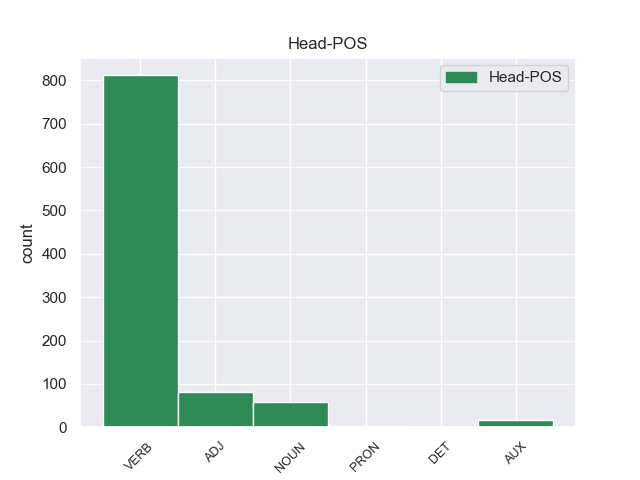
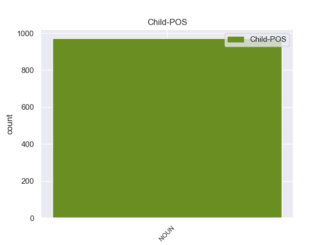

Distribution of features within this leaf



Agreement Rules sorted by frequency.
- When the dependent token is the nominal subject(nsubj) of the head token, and the dependent token is NOUN.
1 Ευελπιστώ _ _ _ _ 0 _ _ _
2 ότι _ _ _ _ 0 _ _ _
3 η _ _ _ _ 0 _ _ _
4 απόφαση απόφαση NOUN _ Gender=Fem|Number=Sing 17 nsubj _ _
5 αυτή _ _ _ _ 0 _ _ _
6 , _ _ _ _ 0 _ _ _
7 συμπεριλαμβανομένης _ _ _ _ 0 _ _ _
8 και _ _ _ _ 0 _ _ _
9 της _ _ _ _ 0 _ _ _
10 αιτιολογικής _ _ _ _ 0 _ _ _
11 έκθεσης _ _ _ _ 0 _ _ _
12 που _ _ _ _ 0 _ _ _
13 την _ _ _ _ 0 _ _ _
14 συνοδεύει _ _ _ _ 0 _ _ _
15 , _ _ _ _ 0 _ _ _
16 θα _ _ _ _ 0 _ _ _
17 διαβιβαστεί διαβιβαστr VERB _ Mood=Ind|Number=Sing|Person=3|Tense=Pres|VerbForm=Fin 0 _ _ _
18 σ _ _ _ _ 0 _ _ _
19 τις _ _ _ _ 0 _ _ _
20 γαλλικές _ _ _ _ 0 _ _ _
21 αρχές _ _ _ _ 0 _ _ _
22 , _ _ _ _ 0 _ _ _
23 εφόσον _ _ _ _ 0 _ _ _
24 υπερψηφιστεί _ _ _ _ 0 _ _ _
25 από _ _ _ _ 0 _ _ _
26 το _ _ _ _ 0 _ _ _
27 Κοινοβούλιο _ _ _ _ 0 _ _ _
28 . _ _ _ _ 0 _ _ _
Disagree Examples:
1 Los _ _ _ _ 0 _ _ _
2 mercados mercado NOUN _ Gender=Masc|Number=Plur 16 nsubj _ _
3 escandinavos _ _ _ _ 0 _ _ _
4 , _ _ _ _ 0 _ _ _
5 el _ _ _ _ 0 _ _ _
6 Reino _ _ _ _ 0 _ _ _
7 Unido _ _ _ _ 0 _ _ _
8 , _ _ _ _ 0 _ _ _
9 el _ _ _ _ 0 _ _ _
10 Benelux _ _ _ _ 0 _ _ _
11 y _ _ _ _ 0 _ _ _
12 los _ _ _ _ 0 _ _ _
13 mercados _ _ _ _ 0 _ _ _
14 asiáticos _ _ _ _ 0 _ _ _
15 han _ _ _ _ 0 _ _ _
16 experimentado experimentar VERB _ Gender=Masc|Number=Sing|Tense=Past|VerbForm=Part 0 _ _ _
17 un _ _ _ _ 0 _ _ _
18 crecimiento _ _ _ _ 0 _ _ _
19 particularmente _ _ _ _ 0 _ _ _
20 fuerte _ _ _ _ 0 _ _ _
21 en _ _ _ _ 0 _ _ _
22 reservas _ _ _ _ 0 _ _ _
23 , _ _ _ _ 0 _ _ _
24 como _ _ _ _ 0 _ _ _
25 se _ _ _ _ 0 _ _ _
26 comunicará _ _ _ _ 0 _ _ _
27 hoy _ _ _ _ 0 _ _ _
28 a _ _ _ _ 0 _ _ _
29 la _ _ _ _ 0 _ _ _
30 Junta _ _ _ _ 0 _ _ _
31 General _ _ _ _ 0 _ _ _
32 Anual _ _ _ _ 0 _ _ _
33 Ordinaria _ _ _ _ 0 _ _ _
34 de _ _ _ _ 0 _ _ _
35 Accionistas _ _ _ _ 0 _ _ _
36 . _ _ _ _ 0 _ _ _
1 Después _ _ _ _ 0 _ _ _
2 de _ _ _ _ 0 _ _ _
3 pasar _ _ _ _ 0 _ _ _
4 un _ _ _ _ 0 _ _ _
5 año _ _ _ _ 0 _ _ _
6 allí _ _ _ _ 0 _ _ _
7 , _ _ _ _ 0 _ _ _
8 hizo _ _ _ _ 0 _ _ _
9 lo _ _ _ _ 0 _ _ _
10 que _ _ _ _ 0 _ _ _
11 la _ _ _ _ 0 _ _ _
12 mayoría mayoría NOUN _ Gender=Fem|Number=Sing 20 nsubj _ _
13 de _ _ _ _ 0 _ _ _
14 los _ _ _ _ 0 _ _ _
15 jóvenes _ _ _ _ 0 _ _ _
16 de _ _ _ _ 0 _ _ _
17 el _ _ _ _ 0 _ _ _
18 Paris _ _ _ _ 0 _ _ _
19 FC _ _ _ _ 0 _ _ _
20 suelen soler VERB _ Mood=Ind|Number=Plur|Person=3|Tense=Pres|VerbForm=Fin 0 _ _ _
21 hacer _ _ _ _ 0 _ _ _
22 y _ _ _ _ 0 _ _ _
23 se _ _ _ _ 0 _ _ _
24 unió _ _ _ _ 0 _ _ _
25 a _ _ _ _ 0 _ _ _
26 el _ _ _ _ 0 _ _ _
27 París _ _ _ _ 0 _ _ _
28 - _ _ _ _ 0 _ _ _
29 Saint _ _ _ _ 0 _ _ _
30 Germain _ _ _ _ 0 _ _ _
31 . _ _ _ _ 0 _ _ _
1 Daida _ _ _ _ 0 _ _ _
2 Ruano _ _ _ _ 0 _ _ _
3 Moreno _ _ _ _ 0 _ _ _
4 es _ _ _ _ 0 _ _ _
5 una _ _ _ _ 0 _ _ _
6 windsurfista _ _ _ _ 0 _ _ _
7 canaria _ _ _ _ 0 _ _ _
8 varias _ _ _ _ 0 _ _ _
9 veces vez NOUN _ Gender=Fem|Number=Plur 10 nsubj _ _
10 campeona campeona NOUN _ Gender=Fem|Number=Sing 0 _ _ _
11 de _ _ _ _ 0 _ _ _
12 el _ _ _ _ 0 _ _ _
13 mundo _ _ _ _ 0 _ _ _
14 . _ _ _ _ 0 _ _ _
1 Es _ _ _ _ 0 _ _ _
2 falsa _ _ _ _ 0 _ _ _
3 , _ _ _ _ 0 _ _ _
4 porque _ _ _ _ 0 _ _ _
5 si _ _ _ _ 0 _ _ _
6 se _ _ _ _ 0 _ _ _
7 dice _ _ _ _ 0 _ _ _
8 que _ _ _ _ 0 _ _ _
9 en _ _ _ _ 0 _ _ _
10 los _ _ _ _ 0 _ _ _
11 contratos _ _ _ _ 0 _ _ _
12 bilaterales _ _ _ _ 0 _ _ _
13 la _ _ _ _ 0 _ _ _
14 causa _ _ _ _ 0 _ _ _
15 de _ _ _ _ 0 _ _ _
16 la _ _ _ _ 0 _ _ _
17 obligación _ _ _ _ 0 _ _ _
18 de _ _ _ _ 0 _ _ _
19 una _ _ _ _ 0 _ _ _
20 de _ _ _ _ 0 _ _ _
21 las _ _ _ _ 0 _ _ _
22 partes _ _ _ _ 0 _ _ _
23 es _ _ _ _ 0 _ _ _
24 la _ _ _ _ 0 _ _ _
25 prestación _ _ _ _ 0 _ _ _
26 de _ _ _ _ 0 _ _ _
27 la _ _ _ _ 0 _ _ _
28 otra _ _ _ _ 0 _ _ _
29 , _ _ _ _ 0 _ _ _
30 olvida _ _ _ _ 0 _ _ _
31 que _ _ _ _ 0 _ _ _
32 la _ _ _ _ 0 _ _ _
33 prestación prestación NOUN _ Gender=Fem|Number=Sing 37 nsubj _ _
34 y _ _ _ _ 0 _ _ _
35 la _ _ _ _ 0 _ _ _
36 obligación _ _ _ _ 0 _ _ _
37 nacen nacer VERB _ Mood=Ind|Number=Plur|Person=3|Tense=Pres|VerbForm=Fin 0 _ _ _
38 a _ _ _ _ 0 _ _ _
39 el _ _ _ _ 0 _ _ _
40 mismo _ _ _ _ 0 _ _ _
41 tiempo _ _ _ _ 0 _ _ _
42 y _ _ _ _ 0 _ _ _
43 no _ _ _ _ 0 _ _ _
44 es _ _ _ _ 0 _ _ _
45 posible _ _ _ _ 0 _ _ _
46 que _ _ _ _ 0 _ _ _
47 una _ _ _ _ 0 _ _ _
48 cosa _ _ _ _ 0 _ _ _
49 sea _ _ _ _ 0 _ _ _
50 causa _ _ _ _ 0 _ _ _
51 de _ _ _ _ 0 _ _ _
52 la _ _ _ _ 0 _ _ _
53 otra _ _ _ _ 0 _ _ _
54 . _ _ _ _ 0 _ _ _
1 El _ _ _ _ 0 _ _ _
2 ilustrísimo ilustrísimo NOUN _ Gender=Masc|Number=Sing 7 nsubj _ _
3 i _ _ _ _ 0 _ _ _
4 su _ _ _ _ 0 _ _ _
5 comitiva _ _ _ _ 0 _ _ _
6 se _ _ _ _ 0 _ _ _
7 hallaban hallar VERB _ Mood=Ind|Number=Plur|Person=3|Tense=Imp|VerbForm=Fin 0 _ _ _
8 a _ _ _ _ 0 _ _ _
9 distancia _ _ _ _ 0 _ _ _
10 de _ _ _ _ 0 _ _ _
11 más _ _ _ _ 0 _ _ _
12 de _ _ _ _ 0 _ _ _
13 trescientas _ _ _ _ 0 _ _ _
14 toesas _ _ _ _ 0 _ _ _
15 de _ _ _ _ 0 _ _ _
16 el _ _ _ _ 0 _ _ _
17 alojamiento _ _ _ _ 0 _ _ _
18 , _ _ _ _ 0 _ _ _
19 caminando _ _ _ _ 0 _ _ _
20 hacia _ _ _ _ 0 _ _ _
21 él _ _ _ _ 0 _ _ _
22 , _ _ _ _ 0 _ _ _
23 cuando _ _ _ _ 0 _ _ _
24 Analican _ _ _ _ 0 _ _ _
25 se _ _ _ _ 0 _ _ _
26 presentó _ _ _ _ 0 _ _ _
27 a _ _ _ _ 0 _ _ _
28 la _ _ _ _ 0 _ _ _
29 vista _ _ _ _ 0 _ _ _
30 , _ _ _ _ 0 _ _ _
31 i _ _ _ _ 0 _ _ _
32 tuvieron _ _ _ _ 0 _ _ _
33 tiempo _ _ _ _ 0 _ _ _
34 para _ _ _ _ 0 _ _ _
35 volver _ _ _ _ 0 _ _ _
36 las _ _ _ _ 0 _ _ _
37 herraduras _ _ _ _ 0 _ _ _
38 , _ _ _ _ 0 _ _ _
39 i _ _ _ _ 0 _ _ _
40 salvar _ _ _ _ 0 _ _ _
41 sus _ _ _ _ 0 _ _ _
42 personas _ _ _ _ 0 _ _ _
43 , _ _ _ _ 0 _ _ _
44 a _ _ _ _ 0 _ _ _
45 que _ _ _ _ 0 _ _ _
46 les _ _ _ _ 0 _ _ _
47 dio _ _ _ _ 0 _ _ _
48 lugar _ _ _ _ 0 _ _ _
49 la _ _ _ _ 0 _ _ _
50 codicia _ _ _ _ 0 _ _ _
51 de _ _ _ _ 0 _ _ _
52 los _ _ _ _ 0 _ _ _
53 insurgentes _ _ _ _ 0 _ _ _
54 , _ _ _ _ 0 _ _ _
55 que _ _ _ _ 0 _ _ _
56 cada _ _ _ _ 0 _ _ _
57 uno _ _ _ _ 0 _ _ _
58 se _ _ _ _ 0 _ _ _
59 empezaba _ _ _ _ 0 _ _ _
60 en _ _ _ _ 0 _ _ _
61 hacer _ _ _ _ 0 _ _ _
62 presa _ _ _ _ 0 _ _ _
63 , _ _ _ _ 0 _ _ _
64 porque _ _ _ _ 0 _ _ _
65 el _ _ _ _ 0 _ _ _
66 que _ _ _ _ 0 _ _ _
67 no _ _ _ _ 0 _ _ _
68 la _ _ _ _ 0 _ _ _
69 hace _ _ _ _ 0 _ _ _
70 vuelve _ _ _ _ 0 _ _ _
71 a _ _ _ _ 0 _ _ _
72 su _ _ _ _ 0 _ _ _
73 casa _ _ _ _ 0 _ _ _
74 con _ _ _ _ 0 _ _ _
75 las _ _ _ _ 0 _ _ _
76 manos _ _ _ _ 0 _ _ _
77 vacías _ _ _ _ 0 _ _ _
78 , _ _ _ _ 0 _ _ _
79 i _ _ _ _ 0 _ _ _
80 por _ _ _ _ 0 _ _ _
81 eso _ _ _ _ 0 _ _ _
82 descuidaron _ _ _ _ 0 _ _ _
83 de _ _ _ _ 0 _ _ _
84 las _ _ _ _ 0 _ _ _
85 personas _ _ _ _ 0 _ _ _
86 . _ _ _ _ 0 _ _ _